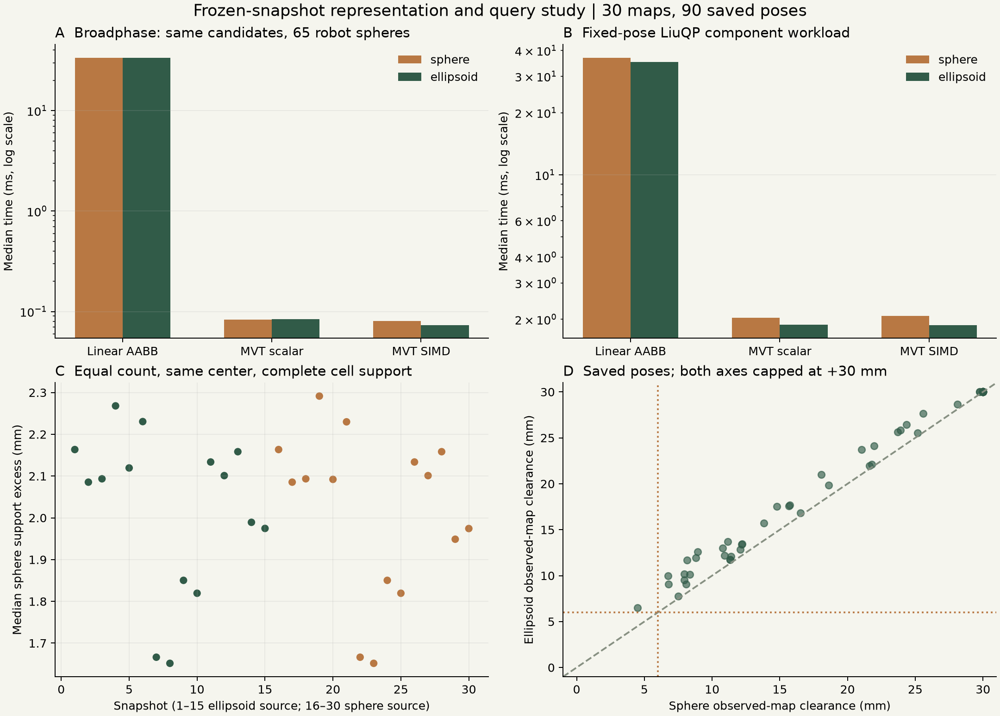

输入完全相同
固定测量单元中心、方向误差集合Q和标量误差δ；球与椭球一单元一代理，数量相等。没有删点、合并或挑选一个让球失败的数量上限。
用同一份观测与同一批机器人姿态，分别回答几何和计算问题。
这次不生成新轨迹，不改脱困算法，也不重跑300项。
数据未加载，请刷新页面或下载下方原始JSON。
15个任务 × 20个起点；椭球最终版结果复用，球组独立冻结运行。
保持搜索、跟踪、观测规则、安全条件和时间口径一致。
275项两组都成功，23项仅椭球成功，2项两组都失败。球组25项未到达中，23项耗尽活动时域，2项因初始地图未获认证而未启动运动。停止原因不自动等于几何不可达证明。
| 任务 | 球 + LiuQP + 规划 | 椭球 + LiuQP + 规划 | 通过数差值 |
|---|
窄笼架为球2/20、椭球19/20，是差异最集中的任务。当前四层货架t2两组均20/20，早期版本“只有椭球＋脱困通过”的结果不能套用于最终版。
只更换已测环境单元的表示。机器人65个球证书、未知空间体素盒保持原样。球组选视角与视线检查也使用球几何；这属于同一表示在整条流水线中的一致切换。两组实际后续观测可随轨迹而不同，因此下面另做同快照比较。固定开发回归集不等于未见任务泛化验证；不同日期的墙钟时间不是隔离负载的性能对照。
两组各15个任务的seed 1，取最后一次发布快照，共30份。
每份使用3个预定保存姿态，共90个姿态。
固定测量单元中心、方向误差集合Q和标量误差δ；球与椭球一单元一代理，数量相等。没有删点、合并或挑选一个让球失败的数量上限。
椭球覆盖保存的单元误差集合；同中心球半径为√λmax(Q)，再保留相同δ。对完整保存集合检查包含关系，不只检查代表点是否落在代理里。
用独立几何计算器比较同一机器人姿态的最小代理净空，同时报告观测障碍和含未知盒的结果。远距离截断为+30mm，不能由离散点推断完整路径是否存在。
支持半径差使用26个预定方向；显示的是各快照统计量的中位数，不把大地图赋予更高权重。覆盖结论以已有传感误差模型为前提，不等于重新证明未观测真实世界的完整覆盖。几何更紧并不意味着每次距离计算都更便宜。

最终300项中，控制器的观测障碍查询使用MVT＋AABB＋SIMD；规划与连续执行认证使用另一套KD-tree候选结构。LiuQP原论文的sphere-tree用于构造环境球近似，当前单元表示不是该原始构造；sphere-tree与AABB查询也不是同一抽象层的二选一。Liu与Yim作者说明 ↗
原生C++标量线性扫描、同索引标量MVT、同索引SIMD MVT，采用相同的float32球–AABB判据与候选顺序。没有用Python循环充当性能基线。
增加全局AABB快速排除、SoA布局及8路AVX2的线性扫描，单查询输出缓冲区与MVT一样复用，再交错计时。它用于检查索引收益是否依赖较弱的标量基线。
| 表示 | C++标量线性扫描 | MVT标量 | MVT SIMD | SIMD额外加速比* |
|---|
| 表示 | 线性AVX2查询 | MVT SIMD查询 | 查询加速比* | 线性AVX2下QP组件 | MVT SIMD下QP组件 | QP组件加速比* |
|---|
时间单位ms；每格为30份快照各自中位数的中位数。*加速比是每份快照配对比值的中位数，所以不必等于表内两个总体中位数相除。查询预热后重复21轮，QP组件预热后重复9轮，索引组交错随机排序；补充强基线中球/椭球运行顺序交替。绑定单CPU、几何单线程、BLAS单线程。建表成本单独报告。
一次QP组件测试使用相同保存构型、最终目标和零上一速度，组装观测障碍约束并求解LiuQP；它不积分机器人运动，不调用脱困，不运行感知，不包含未知空间行和执行保护。为隔离查询方式，三个索引组都走共同的非融合窄阶段。生产版本的融合路径可能有不同绝对耗时。
因此不能将查询加速比直接写成完整控制系统或300项实验加速比，也不能据此宣称硬实时达标。SIMD若只带来小收益或某些快照变慢，也在原始逐快照数据中保留。此次不是与LiuQP原始sphere-tree软件的直接性能比较。
配对下载包为增量归档，内含完整审计和代码差异；完整源码基线及SHA-256在包内BASELINE_ARCHIVE_REFERENCE.json列明。完整原始快照继续归档在实验服务器，下载包包含代码、输入哈希和统计，不声称包含全部高体积原始点云。所有原始轨迹与冻结控制代码保持不变。